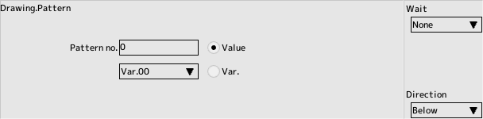

back to the original page
back to the original page
Script commands
Drawing group
Sprite
character editing to register multiple I'll switch the sprites.
- Sprite number
The index number of the sprite you added to your character

Pattern
Specifies the number of the pattern list and animation list created by sprite editing
- Pattern number
Pattern or animation number

Color
Change the drawing color. There are two systems of color changes, and you can switch between them using the system color checkboxes
System color ON is mainly used for the blinking of bullets and is set in the default script.
- Vertex color
Turn off the checkbox to disable vertex color when drawing.
The vertex color is a value that is multiplied by the texture color during drawing. Specify each ARGB value in the range of 0x00 to 0xFF.
If you set everything to 0xFF, you'll get the original color right
When you set the alpha value to a value other than 0xFF, please set the drawing method to semi-transparent
- Offset color
Specify the offset color for drawing.
The offset color is the value added to the texture color during drawing. Specify each ARGB value with a value between 0x00 and 0xFF.
If all are set to 0x00, the primary color will be the same.
- Time to complete the change
Specify how long it will take to complete the color change, in frames. It will take at least one frame to complete the color change.
Method
Changes the drawing functions, such as translucent and opaque.
- Drawing Functions
- Opaque
The fastest of all the common drawing methods
- Semi-transparent
When the texture has an alpha value or you want to change the alpha value of the vertex color, you need to use this rendering method
- Add
Draw by adding color to the already drawn object
- Subtract
Subtract the color from the already drawn object
- Texture Filter
- No
- Draw as is
- Bilinear
It becomes smoother when zoomed in or out, but may cause the picture to be blurred or blur the surrounding texture colors
- Texture mode
Specifies the behavior of drawing outside of the texture area
- Clamp
The outermost color of the texture will be used
- Repeated
Texture will be used repeatedly
- Mirror
Texture will be used repeatedly (flipped once)
Effect
Change the effect parameters for your character. You can change the effect parameters in advance by using character editing Please set up the tabs.
- Effects
Select which effects are covered by the combo box
- Effect values for each parameter
- The same as the effect values for character editing
- Number of frames to change
The time, in frames, it takes for the parameter to complete changing
- Relative
checking makes all values relative
- Use Var.
Apply variables to parameters when checked
Shake
Shake the screen randomly.
- Wobble width in pixels
- Number of frames sustained
Number of frames to keep vibrating
- Attenuation rate
Attenuates the shaking width at a specified rate per frame
Fade
Fade in and out of the screen
- mode
- Fade in and out only within the main area
Main Area of the layout edit.
- Fade in and out of the screen
- Screen
Fade in and out of the entire screen
- Start value (0-255)
255 for fade-in, 0 for fade-out
- End value (0-255)
0 for fade-in, 255 for fade-out
- Number of frames to change
Time to fade in frames
- Rendering Color (ARGB)
Specifies the fade color in ARGB 32 bits.
Alpha is replaced by a fade value
- Use current value for start value
check this box to eliminate the need to specify a fade start value

Stop
- Checkbox
Checked panel will be stopped .
Back to the top of the page